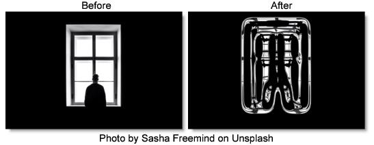

S_WarpPuff
Description
Warps the image based on its gradient. By default, brighter areas are puffed out and darker areas are shrunk.
The S_WarpPuff filter comes from the Emmy award winning Boris FX Sapphire filter set.
Category
Lens/Distort.
Controls
Presets
To select a preset, pick one from the Presets window.
Direction
Determines the areas of the image to be puffed.
Puff
Expands brighter areas and shrinks darker ones.
Shrivel
Shrinks brighter areas and expands darker ones.
Amount
Sets the amount of distortion. This can also be negative to turn puffs into shrivels and vice-versa.
Smoothness
Blurs the image by this amount before determining the warp directions and amounts.
Rotate Warp Dir
Rotates the direction of the warping. This can cause areas of similar brightness to be twisted instead of just expanded or shrunk.
Wrap X & Y
Determines the method for accessing outside the borders of the image.
No
Renders black beyond the borders.
Tile
Repeats a copy of the image.
Reflect
Repeats a mirrored copy. Edges are often less visible with this method.
Filter
If enabled, the image is adaptively filtered when it is resampled. This gives a better quality result when parts of the image are warped smaller.
Crop Input
These 4 parameters, Crop Top, Crop Bottom, Crop Left, and Crop Right, allow selecting a rectangular subsection of the image to be processed. If the Wrap parameters are set to No, the exposed borders will be transparent. If the Wrap is Tile or Reflect, the image is wrapped on the new cropped borders to fill the frame. This can make it easier to avoid artifacts due to distorting an image with bad edges.